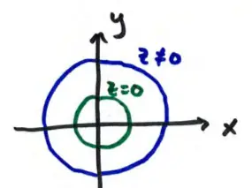

13.6 Quadric Surfaces (continued)
Example
\[ x^2 + y^2 - z^2 = 1 \]
- x-ints: \( x^2 = 1 \rightarrow x = \pm 1 \)
- y-ints: \( y^2 = 1 \rightarrow y = \pm 1 \)
- z-ints: \( -z^2 = 1 \rightarrow \text{no z-ints} \)
xy-trace \( (z=0) \): \( x^2 + y^2 = 1 \) (circle radius 1)
Slices at other z: \( x^2 + y^2 = 1 + z^2 \) (circles radius \( \sqrt{1+z^2} \ge 1 \))
Larger circles than xy-trace
\( -\infty < z < \infty \)
